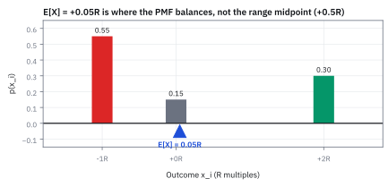
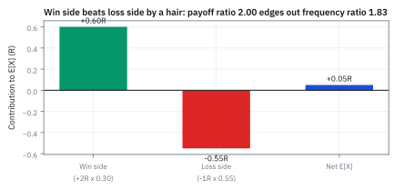
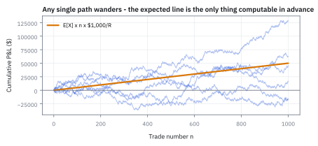
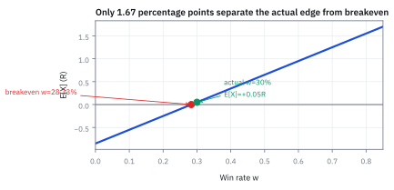
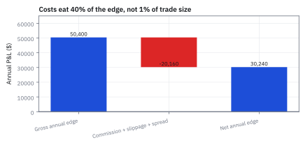

1.3 Expected Value
คูณผลลัพธ์ด้วยโอกาส ก่อนตัดสินว่าเกมหนึ่งคุ้มแค่ไหน
วงล้อมีสี่ช่อง ให้รางวัล \$0, \$0, \$0 และ \$40 หมุนหนึ่งครั้ง ถ้าต้องจ่ายค่าหมุน คุณจะยอมจ่ายสูงสุดเท่าไร?
เฉลย: ไม่เกิน \$10 หลายคนตอบ \$20 เพราะเฉลี่ยตัวเลข 0 กับ 40 ที่เห็นบนวงล้อ แต่ช่อง \$0 มีถึงสามช่อง หมุน 400 ครั้งจะได้ \$40 ราว 100 ครั้ง รวม \$4,000 เฉลี่ยครั้งละ \$10
ตัวเลขนี้เรียกว่า expected value มันคือราคายุติธรรมของเกมที่เล่นซ้ำได้ และเป็นเครื่องมือตัดสินว่ากลยุทธ์เทรดคุ้มหรือไม่
เริ่มจากไม้ TSLA เดิม
ไม้ TSLA จากหัวข้อ 1.2 ชนเป้ากำไร +2R โอกาส 30% ชนจุดตัดขาดทุน −1R โอกาส 55% และปิดที่ทุน 0R โอกาส 15% โดย 1R คือ \$1,000 และเราเทรดวันละ 4 ไม้ ปีละ 250 วัน
คำถามสามข้อ: เฉลี่ยแล้วไม้หนึ่งได้เท่าไร ทั้งปีได้เท่าไร และอัตราชนะตกลงได้อีกแค่ไหนก่อนกลยุทธ์จะขาดทุน อย่าเพิ่งเฉลี่ย 2, −1 กับ 0 ตรง ๆ เพราะสามผลลัพธ์ไม่ได้เกิดบ่อยเท่ากัน
ศัพท์ที่ใช้ในหัวข้อนี้
- expected value
- ค่าเฉลี่ยของผลลัพธ์ที่ถ่วงด้วยโอกาส ใช้บอกว่าถ้าเล่นซ้ำมาก ๆ จะได้เฉลี่ยต่อครั้งเท่าไร และใช้เป็นราคายุติธรรมของเกม
- R-multiple
- หน่วยวัดกำไรขาดทุนเทียบกับเงินที่ยอมเสียต่อไม้ เช่นเสี่ยง \$1,000 แล้วได้ \$2,000 คือ +2R ใช้เทียบไม้ที่มีขนาดเงินต่างกัน
- edge
- expected value ต่อไม้ที่เป็นบวก ใช้เป็นเหตุผลเดียวที่ควรเล่นกลยุทธ์ซ้ำในระยะยาว
- breakeven win rate (BE)
- อัตราชนะที่ทำให้ expected value เป็นศูนย์พอดี ใช้วัดว่ากลยุทธ์อยู่ห่างจากการขาดทุนแค่ไหน
- linearity
- สมบัติที่ว่าคูณผลลัพธ์ทุกค่าด้วยตัวเลขเดียวกัน ค่าเฉลี่ยก็ถูกคูณด้วยตัวเลขนั้น ใช้แปลงหน่วยจาก R เป็นดอลลาร์โดยไม่ต้องสร้างตารางใหม่
- additivity
- สมบัติที่ว่าค่าเฉลี่ยของผลรวมเท่ากับผลรวมของค่าเฉลี่ย ใช้รวมกำไรเฉลี่ยของหลายไม้เป็นรายปี แม้ไม้จะเกี่ยวกันก็ตาม
- payoff
- เงินที่ได้หรือเสียตามผลลัพธ์แต่ละแบบ เช่นชนะได้ +2R แพ้เสีย 1R ใช้เป็นขนาดที่ต้องจับคู่กับโอกาส
- commission
- ค่าธรรมเนียมที่โบรกเกอร์เก็บทุกครั้งที่ส่งคำสั่ง รู้ล่วงหน้า ใช้หักออกจาก edge ก่อนตัดสินว่ากลยุทธ์คุ้มไหม
- slippage
- ส่วนต่างระหว่างราคาที่ตั้งใจได้กับราคาที่ได้จริงตอนคำสั่งจับคู่ ใช้หักออกจาก edge แต่ต้องประมาณเอา และมักแย่ที่สุดในวันที่ตลาดวิ่งแรง
- spread
- ช่องว่างระหว่างราคาที่มีคนพร้อมซื้อกับราคาที่มีคนพร้อมขาย ใช้นับเป็นต้นทุนที่จ่ายทันทีที่เปิดไม้ แม้ราคายังไม่ขยับ
- variance
- ตัววัดว่าผลลัพธ์เหวี่ยงรอบค่าเฉลี่ยกว้างแค่ไหน ใช้บอกความเสี่ยงระหว่างทางที่ค่าเฉลี่ยไม่ได้บอก (สร้างเต็มในหัวข้อ 1.4)
- backtest
- การลองรันกลยุทธ์กับราคาในอดีต ใช้ประมาณโอกาสของแต่ละผลลัพธ์ก่อนลงเงินจริง
- Profit and Loss (P&L)
- กำไรหรือขาดทุนสุทธิของไม้หรือของพอร์ต ใช้รายงานผลเป็นดอลลาร์
- law of large numbers (LLN)
- ข้อเท็จจริงที่ว่าเมื่อเล่นซ้ำมากขึ้น สัดส่วนของแต่ละผลลัพธ์จะเข้าใกล้โอกาสจริง และค่าเฉลี่ยที่นับได้จะเข้าใกล้ expected value ใช้เชื่อมตัวเลขในตารางเข้ากับผลที่เกิดจริง (พิสูจน์ในหัวข้อ 14.1)
- Daniel Bernoulli
- นักคณิตศาสตร์ชาวสวิสที่ชี้ในปี 1738 ว่าเงินก้อนหลังมีค่าต่อเราน้อยกว่าก้อนแรก ใช้เป็นต้นเรื่องของการดูความเสี่ยงคู่กับค่าเฉลี่ย ไม่ใช่ดูค่าเฉลี่ยอย่างเดียว
- Wald's identity
- สูตรที่บอกว่าเมื่อจำนวนไม้ในปีหนึ่งไม่แน่นอน กำไรเฉลี่ยทั้งปีคือจำนวนไม้เฉลี่ยคูณกำไรเฉลี่ยต่อไม้ ใช้วางแผนกำไรเมื่อจำนวนโอกาสเข้าเทรดขึ้นกับตลาด
สัญลักษณ์ที่ใช้ในหัวข้อนี้
| สัญลักษณ์ | ความหมาย | หน่วย |
|---|---|---|
| $X$ | ผลลัพธ์ของหนึ่งไม้ เป็นได้ +2, −1 หรือ 0 | R |
| $x_i$, $p_i$ | ผลลัพธ์แบบที่ $i$ และโอกาสของมัน | R, 0 ถึง 1 |
| $N$, $N_i$ | จำนวนไม้ทั้งหมด และจำนวนไม้ที่ออกผลลัพธ์แบบที่ $i$ | ไม้ |
| $\mathbb{E}[X]$ | expected value ของ $X$ | R |
| $f(x)$ | ความสูงของโอกาสต่อหน่วยสำหรับค่าที่วัดต่อเนื่อง (หัวข้อ 1.8) | ต่อหน่วยของ $x$ |
| $a$ | ตัวแปลงหน่วย ดอลลาร์ต่อ 1R | USD/R |
| $w$ | อัตราชนะที่เราจะแก้หาจุดคุ้มทุน | 0 ถึง 1 |
| $\mu_X$ | กำไรเฉลี่ยต่อไม้ | USD |
ที่มาที่ไป: ตัวเลขเดียวที่บอกว่าเกมมีค่าเท่าไร
คำตอบของ Pascal กับ Fermat ปี 1654 ให้ของที่มีค่ากว่าการแบ่งเงินพนัน คือตัวเลขตัวเดียวที่บอกว่าเกมหนึ่งควรมีราคาเท่าไรก่อนเล่น ก่อนหน้านั้นคนตัดสินเกมจากรางวัลสูงสุดหรือจากความถี่ที่ชนะ ซึ่งหลอกได้ทั้งคู่ ลอตเตอรี่รางวัลใหญ่แต่แทบไม่มีใครได้
ปี 1657 Christiaan Huygens เขียนตำราความน่าจะเป็นเล่มแรก และนิยาม expectation ว่าเป็นราคายุติธรรมของสัญญาที่จ่ายเงินไม่แน่นอน คือค่าเฉลี่ยถ่วงโอกาสของทุกผลลัพธ์ แนวคิดนี้คือสิ่งที่ตลาด option ใช้ตั้งราคาจนทุกวันนี้
ปี 1738 Daniel Bernoulli เจอเกมโยนเหรียญ St. Petersburg ที่จ่าย \$2 ถ้าหัวออกครั้งแรก \$4 ถ้าออกครั้งที่สอง ไปเรื่อย ๆ ค่าเฉลี่ยของทุกรอบคือ \$1 บวก \$1 บวก \$1 ไม่รู้จบ แต่ไม่มีใครยอมจ่ายเกินราว \$20 เพื่อเล่น Bernoulli สรุปว่าเงินก้อนที่สองมีค่าน้อยกว่าก้อนแรก เราจึงต้องดูความเสี่ยงคู่กับค่าเฉลี่ยเสมอ
ขั้นที่ 1 — นับ 1,000 ไม้ แล้วค่าเฉลี่ยก็โผล่ออกมาเอง
เทรด 1,000 ไม้ด้วยตารางเดิม จะชนะราว 300 ไม้ แพ้ราว 550 ไม้ และเสมอราว 150 ไม้ รวมเงินแล้วหารจำนวนไม้ ดูว่าผลออกมาหน้าตาเป็นอย่างไร
สองบรรทัดแรกคือการนับเงินธรรมดา ยอดรวมแล้วหาร 1,000 ได้เฉลี่ยไม้ละ 0.05R บรรทัดที่สามคือเรื่องเดียวกันแบบทั่วไป: ค่าเฉลี่ยของไม้ทั้งหมด เท่ากับผลลัพธ์แต่ละแบบ คูณสัดส่วนที่มันเกิด แล้วบวกกัน
พอเล่นมากขึ้นเรื่อย ๆ สัดส่วนที่นับได้จะเข้าใกล้โอกาสในตาราง ข้อเท็จจริงนี้ชื่อ law of large numbers (LLN) ซึ่งเราจะพิสูจน์เองในหัวข้อ 14.1 ตอนนี้ใช้แค่ภาพว่า 300 ใน 1,000 คือ 0.30 พอดี
ผลที่ได้คือ expected value: ผลลัพธ์คูณโอกาสแล้วบวก สำหรับค่าที่วัดต่อเนื่อง ผลบวกทีละแบบกลายเป็นการรวมพื้นที่ทีละแถบบาง ๆ ซึ่งคือ integral ในบรรทัดสุดท้าย
Figure 1 — จุดศูนย์ถ่วง ไม่ใช่จุดกึ่งกลาง

สามแท่งคือตารางน้ำหนักจากหัวข้อ 1.2 ถ้าวางไม้กระดานบนแท่งเหล่านี้ จุดที่ไม้ทรงตัวคือ +0.05R ไม่ใช่กึ่งกลางของช่วง −1 ถึง +2 เพราะฝั่ง −1R หนักกว่าเกือบสองเท่า
กับดัก: เฉลี่ยตัวเลขที่เห็นตรง ๆ
สัญชาตญาณแรกคือเอา +2, 0, −1 บวกกันแล้วหารสาม ซึ่งแอบสมมติว่าสามผลลัพธ์เกิดบ่อยเท่ากัน ทั้งที่ไม้แพ้เกิดบ่อยกว่าไม้ชนะเกือบสองเท่า ขั้นถัดไปแสดงว่าคำตอบผิดไปแค่ไหน
ขั้นที่ 2 — ค่าเฉลี่ยธรรมดาให้คำตอบผิด
ถ้าเฉลี่ยโดยไม่ถ่วงโอกาส จะได้ตัวเลขที่สวยเกินจริงเกือบเจ็ดเท่า
0.33R ผิดเพราะให้น้ำหนักทุกผลลัพธ์เท่ากันที่ 1/3 แต่ของจริงไม้ขาดทุนมีน้ำหนัก 0.55 ใครใช้ตัวเลขนี้ตั้งขนาดไม้จะเสี่ยงหนักเกินกลยุทธ์ไปมาก
ขั้นที่ 3 — คูณน้ำหนักทีละแถวแล้วรวม
คูณผลลัพธ์แต่ละแถวด้วยโอกาสของแถวนั้น แล้วรวมแรงดึงฝั่งบวกกับฝั่งลบ
ฝั่งชนะดึงขึ้น 0.60R ฝั่งแพ้ดึงลง 0.55R ส่วนไม้เสมอไม่ขยับอะไร เหลือ +0.05R ต่อไม้ ตรงกับที่นับ 1,000 ไม้ในขั้นที่ 1 พอดี
คำตอบข้อแรก — ไม้หนึ่งได้เฉลี่ยเท่าไร
คำตอบ: ก่อนหักต้นทุน ไม้หนึ่งได้เฉลี่ย +0.05R เพราะไม้ชนะใหญ่พอชดเชยการแพ้ที่บ่อยกว่า ตัวเลขนี้ยังไม่ใช่กำไรจริง ต้องหักต้นทุนก่อน และต้องตรวจว่าโอกาสกับขนาดในตารางยังเป็นแบบนี้อยู่
แพ้บ่อยกว่าแต่ยังชนะได้อย่างไร
ไม้แพ้เกิดบ่อยกว่าไม้ชนะ แต่ไม้ชนะได้เงินมากกว่าไม้แพ้ คำถามคือความได้เปรียบเรื่องขนาดชนะความเสียเปรียบเรื่องความถี่ไหม วิธีดูง่ายที่สุดคือเทียบอัตราส่วนสองตัว
ขั้นที่ 4 — เทียบความถี่
ไม้แพ้เกิดบ่อยกว่าไม้ชนะกี่เท่า
ไม้แพ้เกิดบ่อยกว่าไม้ชนะ 1.83 เท่า ถ้าขนาดเท่ากัน กลยุทธ์นี้ขาดทุนแน่นอน
ขั้นที่ 5 — เทียบขนาด payoff
ไม้ชนะจ่ายใหญ่กว่าไม้แพ้กี่เท่า
ไม้ชนะใหญ่กว่า 2.00 เท่า ซึ่งมากกว่า 1.83 อยู่นิดเดียว ขนาดจึงชนะความถี่แบบเฉียด ๆ นี่คือเหตุผลที่ edge ออกมาแค่ 0.05R
สองปุ่มของธุรกิจเทรด
กลยุทธ์ทุกแบบหมุนได้แค่สองปุ่ม คืออัตราชนะกับขนาดชนะเทียบขนาดแพ้ ตัวอย่างสมมติ: กลยุทธ์ตามแนวโน้มชนะแค่ 35% แต่ชนะทีละ 3R ได้เฉลี่ย 0.35(3) − 0.65(1) = 0.40R ต่อไม้
ส่วนกลยุทธ์ดักกลับตัวชนะถึง 70% แต่ชนะทีละ 0.6R ได้เฉลี่ย 0.70(0.6) − 0.30(1) = 0.12R ต่อไม้ ชนะบ่อยกว่าไม่ได้แปลว่าเฉลี่ยดีกว่า expected value ทำให้สองกลยุทธ์ที่หน้าตาต่างกันมาวางเทียบกันได้บนตัวเลขเดียว
Figure 2 — payoff ratio ชนะ frequency ratio แบบเฉียด ๆ

แท่งเขียวคือแรงบวกจากไม้ชนะ +0.60R แท่งแดงคือแรงลบจากไม้แพ้ −0.55R ผลสุทธิคือแท่งน้ำเงิน +0.05R ชนะกันแค่เส้นยาแดงผ่าแปด
ข้อสอง — แปลงเป็นดอลลาร์
ถามว่า ถ้า 1R คือ \$1,000 ไม้หนึ่งได้เฉลี่ยกี่ดอลลาร์ ต้องสร้างตารางเป็นดอลลาร์ใหม่ทั้งตารางไหม หรือเอา 0.05R คูณ 1,000 ได้เลย
ขั้นที่ 6 — linearity: คูณก่อนเฉลี่ย หรือเฉลี่ยก่อนคูณ ได้เท่ากัน
ลองทางยาวก่อน แปลงทุกแถวเป็นดอลลาร์แล้วค่อยเฉลี่ย จากนั้นดูว่าทำไมทางสั้นให้คำตอบเดียวกันเสมอ
สี่บรรทัดแรกคือทางยาว บรรทัดที่ห้าถึงแปดคือทางสั้น ทั้งสองได้ \$50 เพราะทุกแถวถูกคูณด้วย 1,000 ตัวเดียวกัน จึงดึงมันออกมานอกวงเล็บได้ เหมือน 1,000(0.60) บวก 1,000(−0.55) เท่ากับ 1,000 คูณผลรวม
สามบรรทัดสุดท้ายเขียนเหตุผลเดียวกันกับตัวคูณ $a$ ใด ๆ เงื่อนไขมีข้อเดียว คือ $a$ ต้องเป็นตัวเลขเดียวกันทุกแถว ถ้าขนาดไม้เปลี่ยนตามผลลัพธ์ จะดึงออกมาแบบนี้ไม่ได้
ขั้นที่ 7 — แปลงเป็น USD แล้วตรวจซ้ำ
ใช้ทางสั้นจากขั้นที่ 6 แล้วตรวจกับทางยาว สองทางต้องตรงกัน
ทั้งทางแปลงหน่วยและทางถ่วงเงินทีละแถวให้ \$50 ต่อไม้ ถ้าไม่ตรงกัน แปลว่าหน่วยหรือเครื่องหมายผิดที่ใดที่หนึ่ง นี่คือการตรวจสิบวินาทีที่ควรทำทุกครั้ง
คำตอบข้อสอง — \$50 ต่อไม้แปลว่าอะไร
คำตอบ: เฉลี่ยไม้ละ \$50 แต่ไม้ถัดไปจะได้ +\$2,000, −\$1,000 หรือ \$0 เท่านั้น ไม่มีไม้ไหนได้ \$50 จริง ตัวเลขนี้คือสิ่งที่ค่าเฉลี่ยของหลายร้อยไม้จะเข้าใกล้ หัวข้อ 1.4 จะบอกว่าต้องเล่นกี่ไม้ค่าเฉลี่ยจริงถึงจะเข้าใกล้มัน
ขั้นที่ 8 — additivity: ค่าเฉลี่ยของผลรวม คือผลรวมของค่าเฉลี่ย
ลองกรณีที่สองไม้ผูกกันแน่นที่สุด คือออกเหมือนกันทุกครั้ง ผลรวมสองไม้จึงเป็น +4, −2 หรือ 0 ด้วยโอกาส 0.30, 0.55, 0.15 เฉลี่ยได้ 1.20 − 1.10 = 0.10R ซึ่งเท่ากับ 0.05 + 0.05 พอดี แม้สองไม้จะเกี่ยวกันสุดขีด บรรทัดข้างล่างแสดงว่าทำไมเป็นแบบนี้ทุกกรณี
$p_{ij}$ คือโอกาสที่ไม้แรกออก $x_i$ และไม้สองออก $y_j$ พร้อมกัน บรรทัดแรกคือนิยามค่าเฉลี่ยที่ใช้กับผลรวม จากนั้นกระจายวงเล็บแยกเป็นสองก้อน
ตรงนี้แหละที่คนสะดุด: บรรทัดที่สี่ถึงห้ารวม $p_{ij}$ ของทุกผลลัพธ์ของอีกไม้จนหมด เหลือแค่โอกาสของไม้เดียว เราไม่เคยต้องแยก $p_{ij}$ เป็นผลคูณเลย กฎนี้จึงไม่ต้องสมมติว่าไม้ไม่เกี่ยวกัน และใช้ซ้ำไปจนครบ n ไม้ได้
ขั้นที่ 9 — นับไม้แล้วรวมเป็นหนึ่งปี
สี่ไม้ต่อวันคูณ 250 วันได้ 1,000 ไม้ จากนั้น additivity เปลี่ยนผลรวม 1,000 ไม้เป็นจำนวนไม้คูณกำไรเฉลี่ยต่อไม้
1,000 ไม้ไม้ละ \$50 ได้ \$50,000 ต่อปี และตัวเลขนี้ไม่ได้ขึ้นกับว่าไม้เกี่ยวกันหรือไม่ ความเกี่ยวกันไปเปลี่ยนความเหวี่ยงของปี ไม่ได้เปลี่ยนค่าเฉลี่ย
ขั้นที่ 10 — เมื่อจำนวนไม้ในปีหนึ่งไม่แน่นอน (Wald's identity)
จำนวนไม้ขึ้นกับตลาด สมมติปีหน้ามีโอกาสครึ่งหนึ่งที่จะได้เทรด 900 ไม้ และอีกครึ่งหนึ่ง 1,100 ไม้ คิดทีละกรณีก่อน: ปี 900 ไม้เฉลี่ยได้ \$45,000 ปี 1,100 ไม้เฉลี่ยได้ \$55,000 เฉลี่ยสองกรณีได้ \$50,000
วิธีคิดมีสองชั้น ชั้นแรกแกล้งทำเป็นรู้จำนวนไม้ก่อน ถ้ารู้ว่ามี n ไม้ กำไรเฉลี่ยคือ n คูณกำไรเฉลี่ยต่อไม้ ตามขั้นที่ 8
ชั้นที่สองเฉลี่ยคำตอบของชั้นแรกข้ามทุกกรณีของจำนวนไม้ ตามน้ำหนักของแต่ละกรณี ผลคือจำนวนไม้เฉลี่ยคูณกำไรเฉลี่ยต่อไม้ เงื่อนไขคือจำนวนไม้ต้องไม่ขึ้นกับว่าไม้ออกมากำไรหรือขาดทุน
จุดที่ทรงพลังที่สุดของ additivity
additivity ไม่ต้องใช้ independence เลย ต่อให้ไม้แพ้ติดกันเป็นกลุ่มในตลาดแกว่ง หรือชนะติดกันในตลาดมีแนวโน้ม กำไรเฉลี่ยทั้งปีก็ยังเป็น \$50,000 เท่าเดิม สิ่งที่ความเกี่ยวกันของไม้เปลี่ยนคือความเหวี่ยงของผลรายปี ซึ่งหัวข้อ 1.4 จะวัดออกมาเป็นตัวเลข
Figure 3 — เส้นทางจริงส่าย เส้น expected value ไม่ส่าย

เส้นบางหกเส้นคือพอร์ตจำลองหกแบบที่เล่นกลยุทธ์เดียวกัน แต่ละเส้นส่ายไปคนละทาง เส้นส้มคือกำไรเฉลี่ยสะสม เป็นเส้นตรงเส้นเดียวที่คำนวณได้ล่วงหน้า
ขั้นที่ 11 — แก้หาอัตราชนะที่คุ้มทุนพอดี
ให้ $w$ เป็นอัตราชนะ ตรึงโอกาสเสมอไว้ที่ 0.15 โอกาสแพ้จึงเหลือ $0.85-w$ ตั้งค่าเฉลี่ยให้เป็นศูนย์แล้วแก้หา $w$
อัตราชนะคุ้มทุนคือ 28.33% ต่ำกว่าอัตราชนะจริง 30% แค่ 1.67 จุด แปลว่าใน 1,000 ไม้ ถ้าชนะน้อยลงราว 17 ไม้ กลยุทธ์ก็หมดกำไร นี่คือระยะห่างจากหน้าผาที่ต้องเฝ้าดู
Figure 4 — ห่างจากหน้าผาแค่ 1.67 percentage points

จุดเขียวคืออัตราชนะจริง 30% จุดแดงคือจุดคุ้มทุน 28.33% ระยะห่าง 1.67 จุดคือเกราะทั้งหมดที่กันกลยุทธ์นี้จากการขาดทุน
Worked Example — หักต้นทุนแล้วเหลือเท่าไร
โจทย์ให้อะไรมาบ้าง: edge ก่อนต้นทุน 0.05R ต่อไม้ ต้นทุนรวม 0.02R ต่อไม้ เทรด 1,000 ไม้ และ 1R เท่ากับ USD 1,000
คำตอบ: edge หลังต้นทุนเหลือ 0.03R ต่อไม้ กำไรเฉลี่ยทั้งปีเหลือ USD 30,000
ตรวจเองใน 10 วินาที: 0.03 คูณ 1,000 ไม้ คูณ 1,000 ดอลลาร์ ได้ 30,000 ต้องน้อยกว่า 50,000 ที่ได้ก่อนหักต้นทุน
แปลว่าอะไร: กลยุทธ์ยังมี edge แต่ต้นทุนกินกำไรไป 40% กับดักคือเห็นค่าเฉลี่ยบวกแล้วคิดว่าทุกปีต้องกำไร
กับดัก: ต้นทุนเล็ก ๆ กิน edge ไปเป็นสัดส่วนใหญ่
ต้นทุนรวม 0.02R ต่อไม้ หรือ \$20 เมื่อ 1R คือ \$1,000 ฟังดูเล็กเพราะเป็นแค่ 2% ของเงินที่เสี่ยง
แต่ต้องเทียบกับ edge ไม่ใช่กับเงินที่เสี่ยง 0.02 ส่วน 0.05 เท่ากับ 0.40 ต้นทุนจึงกินกำไรเฉลี่ยไป 40% ฐานที่เอามาเทียบต่างกัน เปอร์เซ็นต์ก็ต่างกันคนละเรื่อง กลยุทธ์ที่ edge บางยิ่งต้องระวังข้อนี้
ขั้นที่ 12 — หักต้นทุนแล้วดูว่าเหลือจริงเท่าไร
หักต้นทุนต่อไม้ออกจาก edge ก่อน แล้วคูณจำนวนไม้กับมูลค่าของ 1R สองบรรทัดสุดท้ายเทียบกับกำไรก่อนต้นทุน
ต้นทุน 0.02R ทำให้ edge เหลือ 0.03R ต่อไม้ กำไรเฉลี่ยทั้งปีจึงเหลือ \$30,000 ส่วนที่หายไป \$20,000 คือ 40% ของกำไรเดิม
Figure 5 — ต้นทุนกิน 40% ของกำไรทั้งปี

แผนภูมิน้ำตก: เริ่มจากกำไรก่อนต้นทุน \$50,000 ต้นทุน \$20,000 กัดออกไป เหลือ \$30,000 ต้นทุนกัดจาก edge ที่บางอยู่แล้ว ไม่ใช่จากเงินต้น
กับดัก: รอ 0.05R จากไม้ถัดไป
ไม้ถัดไปออกได้แค่ +2R, −1R หรือ 0R ไม่มีทางออก 0.05R เลย expected value เป็นสมบัติของการเล่นซ้ำจำนวนมาก ใช้ตัดสินว่ากลยุทธ์ดีไหม ไม่ใช่คำทำนายไม้ถัดไป trader ที่หงุดหงิดเพราะแพ้สามไม้ติดกำลังตัดสินกลยุทธ์จากข้อมูลสามจุด
ข้อจำกัด: วิธีนี้สมมติอะไร และของจริงเป็นอย่างไร
| เรื่อง | วิธีนี้สมมติว่า | ของจริงเป็นอย่างไร | ผลที่ตามมาเวลาใช้งาน |
|---|---|---|---|
| สิ่งที่มันบอก | บอกค่าเฉลี่ยระยะยาว | เราเทรดระยะสั้นด้วยเงินจำกัด | ค่าเฉลี่ยบวกไม่ได้กันการเจ๊งระหว่างทาง |
| จำนวนครั้ง | เล่นซ้ำได้ไม่จำกัด | ทุนหมดก่อนก็จบเกม | ต้องดูขนาดไม้คู่กันเสมอ ซึ่งคือหัวข้อ 17.2 |
| ความเหวี่ยง | ไม่พูดถึงความเหวี่ยงเลย | สองกลยุทธ์ค่าเฉลี่ยเท่ากันอาจเสี่ยงต่างกันสิบเท่า | ต้องอ่านคู่กับหัวข้อ 1.4 เสมอ |
ค่าเฉลี่ยเป็นตัวเลขที่ถูกต้องแต่ไม่พอ ส่วนที่เหลือของบทนี้คือการเติมสิ่งที่มันไม่ได้บอก
โค้ดคิดค่าเฉลี่ยของไม้ TSLA ทั้งในหน่วย R และ USD
wheel = [0, 0, 0, 40]
assert sum(wheel) / len(wheel) == 10
p = {2: 0.30, -1: 0.55, 0: 0.15}
total = 300 * 2 + 550 * (-1) + 150 * 0
assert total == 50 and total / 1000 == 0.05
ev = sum(x * q for x, q in p.items())
assert abs(ev - 0.05) < 1e-12 and abs((2 + 0 - 1) / 3 - 0.33) < 5e-3 # the plain average is wrong
assert abs(0.55 / 0.30 - 1.83) < 5e-3
usd = sum(1000 * x * q for x, q in p.items())
assert abs(usd - 50) < 1e-9 and abs(1000 * ev - usd) < 1e-9 # linearity
assert abs(1000 * usd - 50_000) < 1e-6
assert abs(0.5 * 900 * usd + 0.5 * 1100 * usd - 50_000) < 1e-6 # Wald's identity
w_be = 0.85 / 3
assert abs(w_be - 0.2833) < 5e-5 and abs(2 * w_be - (0.85 - w_be)) < 1e-12
net = 1000 * (0.05 - 0.02) * 1000
assert abs(net - 30_000) < 1e-6 and abs((50_000 - net) / 50_000 - 0.40) < 1e-12โค้ดยืนยันว่า edge คือ +0.05R ไม่ใช่ค่าเฉลี่ยธรรมดา 0.33R แปลงเป็น 50 USD ต่อไม้ รวมเป็น 50,000 USD ต่อปี หาอัตราชนะคุ้มทุน 28.33% และกำไรหลังต้นทุน 30,000 USD
สรุปที่ใช้ได้จริง
- expected value คือค่าเฉลี่ยที่ได้เมื่อเล่นซ้ำมาก ๆ คำนวณจาก $\mathbb{E}[X]=\sum_i x_i p_i$ ต้องถ่วงด้วยโอกาสเสมอ ห้ามเฉลี่ยตัวเลขที่เห็นตรง ๆ
- linearity แปลงหน่วยได้ทันที เช่น 0.05R คูณ \$1,000 ได้ \$50 ต่อไม้ ส่วน additivity รวมค่าเฉลี่ยของหลายไม้ได้ตรง ๆ โดยไม่ต้องสมมติ independence
- ดูระยะห่างจากอัตราชนะคุ้มทุนเสมอ ตัวอย่างนี้ห่างแค่ 1.67 จุด หรือราว 17 ไม้จาก 1,000 ไม้
- ต้นทุนหักจาก edge โดยตรง ต้นทุน 0.02R ดูเล็กแต่กินกำไรเฉลี่ยไป 40%
- เมื่อจำนวนไม้ไม่แน่นอน กำไรเฉลี่ยทั้งปีคือจำนวนไม้เฉลี่ยคูณกำไรเฉลี่ยต่อไม้ แต่ค่าเฉลี่ยไม่บอกความเหวี่ยง ต้องอ่านคู่กับหัวข้อ 1.4